Unodelposto mette in contatto chi è del posto con chi viene da fuori, o anche solo dal paese accanto. Chi vive in un luogo regala qualche ora del suo tempo per un incontro semplice: un caffè, due chiacchiere, una passeggiata. Chi partecipa si candida, e se viene accolto incontra quella persona dal vivo, in un luogo pubblico.
Questa guida ti accompagna nei primi minuti: crei l'account, entri, sistemi il profilo e impari dove trovare le cose. Da qui in poi puoi partecipare a un incontro, proporne uno o fare entrambe le cose.
Un solo account
Lo stesso account serve per partecipare come Ospite e, quando vuoi, per diventare uno del posto.
Gratis, sempre
Non si paga niente: né alla piattaforma né a chi ti accoglie. Il denaro non entra mai negli incontri.
Solo maggiorenni
Per iscriverti servono 18 anni compiuti. La data di nascita non viene mai mostrata agli altri.
Funziona dal browser
Non devi scaricare niente. Se vuoi, puoi mettere Unodelposto sulla schermata Home del telefono.
I primi passi
Valgono per chiunque arrivi su Unodelposto, qualunque cosa voglia fare dopo.
Crea l'account
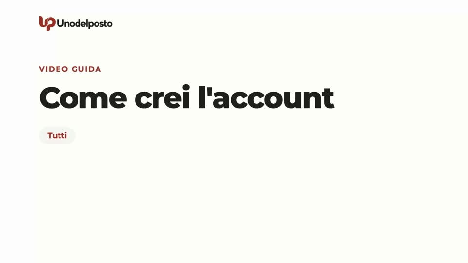
Sul sito pubblico premi Accedi in alto a destra. In fondo alla pagina trovi il riquadro «Non hai ancora un account?» con il pulsante Registrati. Se invece vuoi subito proporre un incontro, parti da Diventa uno del posto: dopo l'iscrizione ti portiamo direttamente a preparare la tua prima esperienza.
- Nome e cognome. Usa quelli veri: gli altri vedranno il nome e solo l'iniziale del cognome.
- Email. È l'indirizzo con cui entrerai e dove ricevi gli avvisi. Nessun altro la vede.
- Password, se la vuoi. Premi «Vuoi anche una password? (facoltativa)». Deve avere almeno 8 caratteri. Se la lasci vuota, per entrare ti mandiamo ogni volta un codice via email.
- Data di nascita. Serve a confermare che sei maggiorenne. Non viene mai mostrata agli altri.
- Dove vivi. Scrivi il nome del tuo comune di residenza e sceglilo dall'elenco. Serve a trovare esperienze vicine e, se diventi uno del posto, a dire di dove sei.
- Le due spunte obbligatorie. «Accetto i Termini di servizio» e «Ho letto le Regole della comunità: niente denaro, mai». La spunta sulla newsletter è facoltativa.
- Crea account. Premi il pulsante in fondo al modulo.
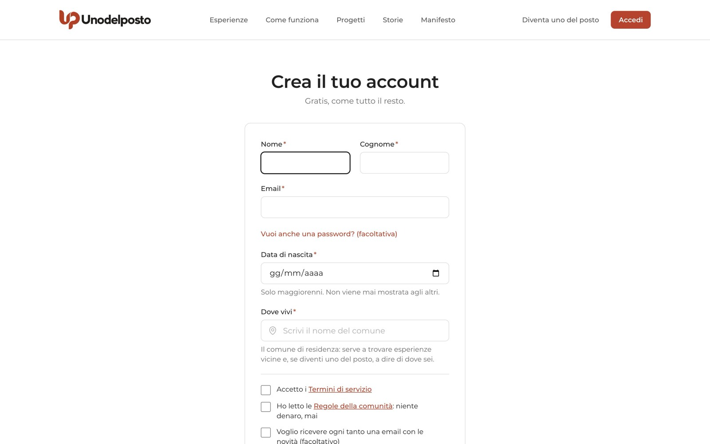
Se hai usato il modulo, ti arriva un'email con un link: aprila e conferma l'indirizzo. Finché non lo fai non puoi candidarti né pubblicare. Se l'email non arriva, guarda nella posta indesiderata oppure premi Invia di nuovo il link.
Se nella pagina compare il pulsante Registrati con Google, puoi usare il tuo account Google. Al primo ingresso una pagina, «Ancora due cose», ti chiede comunque data di nascita, comune e le due spunte; poi premi Continua.
Accedi
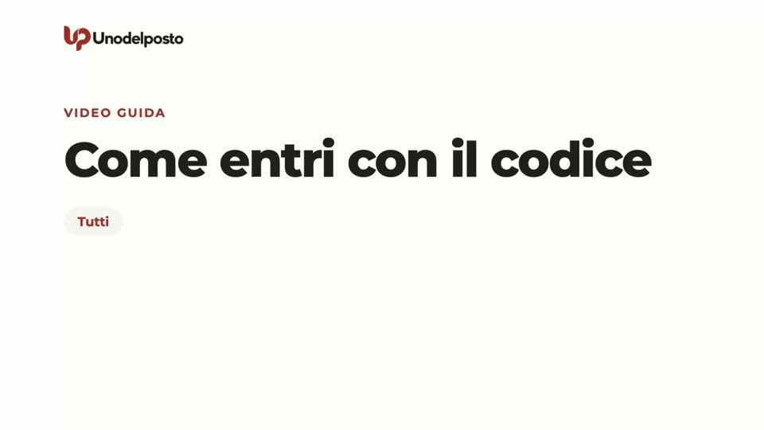
Il modo più semplice è il codice via email, senza password da ricordare.
- Scrivi la tua email. Premi Accedi, inserisci l'indirizzo e premi Ricevi il codice.
- Apri la posta. Ti arriva un codice di 6 cifre. Vale pochi minuti: la pagina ti dice quanti.
- Inserisci il codice. Scrivilo nella pagina «Controlla la tua email» e premi Entra.
Se il codice non arriva, guarda nella posta indesiderata. Dopo qualche secondo puoi premere Mandami un altro codice: quello di prima smette di valere. Se hai sbagliato indirizzo, premi Usa un altro indirizzo.
Se usi un indirizzo che non ha ancora un account, il codice serve a confermarlo e ti porta al modulo di iscrizione, con l'email già compilata.
Preferisci la password? Nella pagina di accesso premi Preferisci usare la password?, scrivila e premi Accedi. Se l'hai dimenticata, c'è Password dimenticata?. La spunta Ricordami ti tiene dentro su quel dispositivo. Se è disponibile, trovi anche Continua con Google.
Completa il profilo
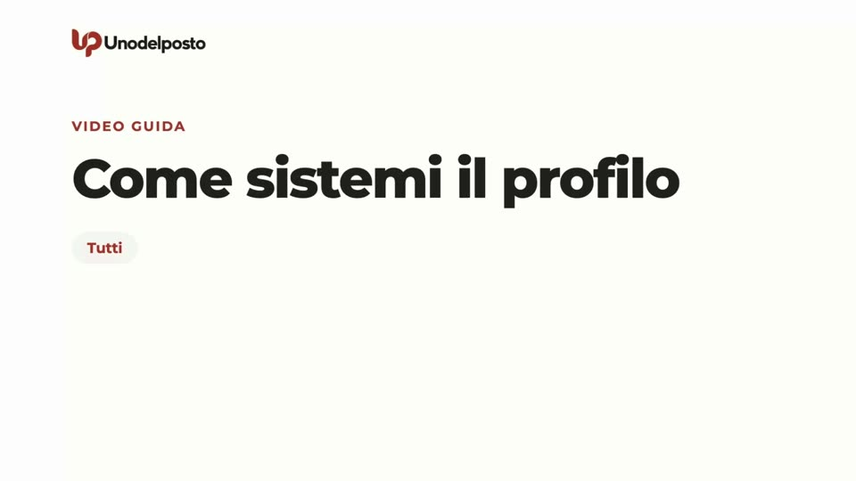
Il profilo è la prima cosa che le persone guardano prima di accoglierti o di candidarsi. Apri Profilo nel menu: si apre la pagina «Il mio profilo».
- Foto del profilo. Scegli una foto del viso (JPG, PNG o WebP, fino a 8 MB). Viene ritagliata al centro in formato quadrato.
- Due righe su di te. Chi sei, cosa ti piace, perché sei qui. Al massimo 600 caratteri.
- Lingue. Spunta quelle che parli: Italiano, English, Français, Deutsch, Español.
- Controlla il resto. Nome, cognome, username (è l'indirizzo del tuo profilo pubblico) e «Dove vivi».
- Salva. Premi il pulsante in fondo.

Con Come ti vedono gli altri, in alto a destra, vedi il tuo profilo pubblico così come appare agli altri. Lo username si può cambiare di nuovo solo dopo 30 giorni. La data di nascita si modifica solo scrivendo al supporto.
Il riquadro «Fiducia e identità» mostra i segni di fiducia che ti danno gli Enti. Ne parliamo in «Rete, verifiche e profili affidati».
La Home e il menu
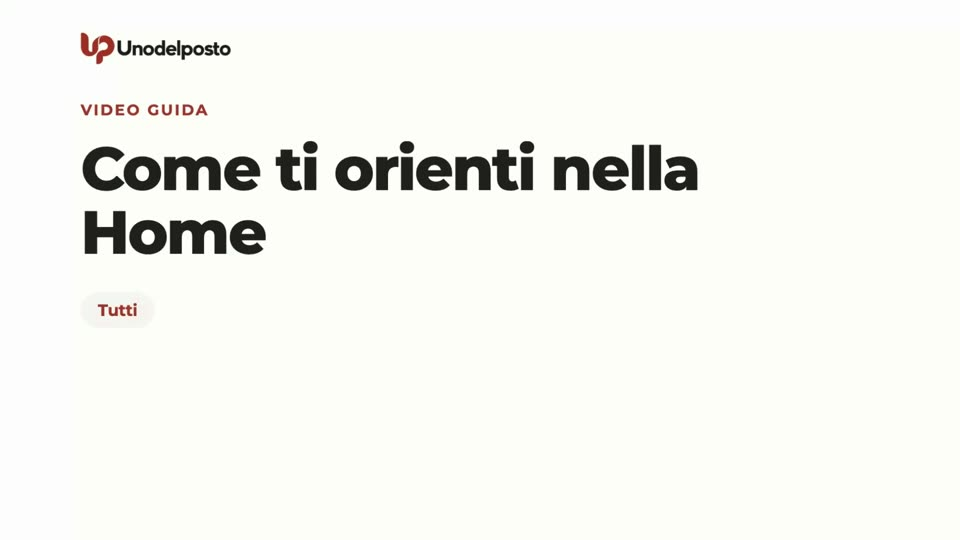
Dopo l'accesso arrivi nella Home dell'area personale, che ti saluta con «Ciao» e il tuo nome. Mostra solo quello che ti serve adesso:
- Da fare: recensioni da scrivere, la foto da aggiungere e simili.
- Messaggi: le ultime chat di gruppo, con il link Tutte le chat.
- Prossimi incontri: le esperienze a cui partecipi o che proponi, con il link alla chat.
- In attesa di risposta: le candidature che hai inviato e che aspettano una decisione.
- Vicino a te: esperienze intorno al tuo comune, con il pulsante per cercare vicino a dove ti trovi.
Se qualcuno vuole venire a un tuo incontro o rispondere a una tua Proposta, in cima compare il riquadro «Una persona vuole venire», con Approva e Rifiuta.
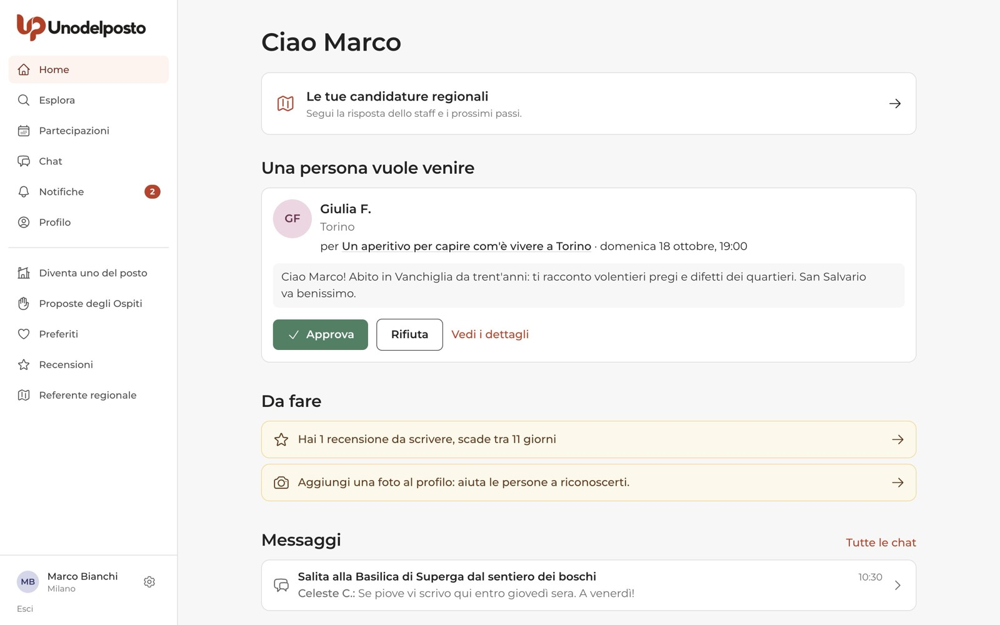
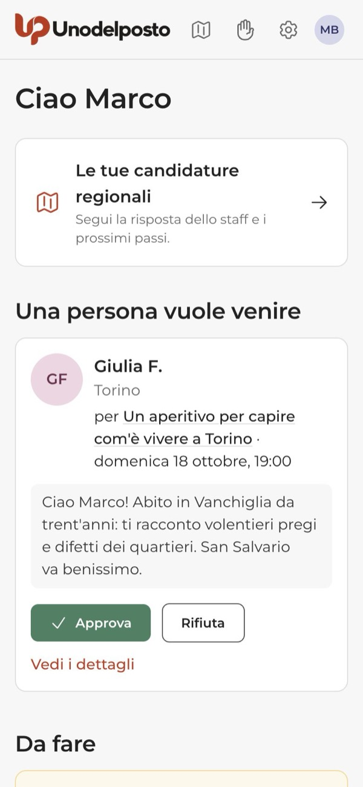
Da computer, il menu laterale ha in alto Home, Esplora, Partecipazioni, Chat, Notifiche e Profilo. Sotto la linea trovi Diventa uno del posto (che diventa Le mie esperienze quando lo sei), Proposte degli Ospiti, Preferiti e Recensioni. Alcune voci compaiono solo se ti riguardano: Enti e progetti se gestisci un Ente, Referente regionale o La tua regione se hai a che fare con una squadra regionale. In fondo ci sono il tuo nome, la rotellina delle impostazioni e Esci.
Da telefono, la barra in basso ha cinque voci: Home, Esplora, Partecipazioni, Chat, Notifiche. In alto trovi la mano delle Proposte degli Ospiti, la rotellina delle impostazioni e la tua foto, che apre il profilo. Preferiti, Recensioni e le altre voci sono scorciatoie nella Home.
Notifiche
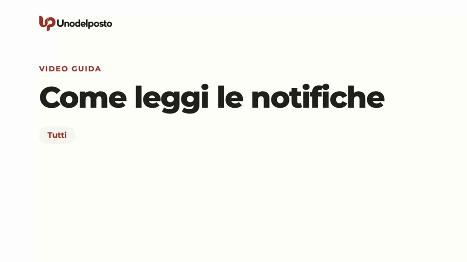
Gli avvisi arrivano in tre posti. Li regoli tu da Impostazioni → Notifiche.
| Dove | Cosa arriva |
|---|---|
| Campanella Notifiche | Candidature, approvazioni, promemoria, recensioni. Il numero rosso dice quante non hai ancora letto. |
| Gli avvisi più importanti, per esempio una candidatura accettata o un incontro annullato. | |
| Telefono | Gli stessi avvisi della campanella, anche a schermo spento, se li attivi. Più gli avvisi dei nuovi messaggi in chat. |
Nella pagina Notifiche gli avvisi sono raggruppati per giorno. Tocca un avviso per aprire la pagina a cui si riferisce. Segna tutte come lette azzera il contatore.
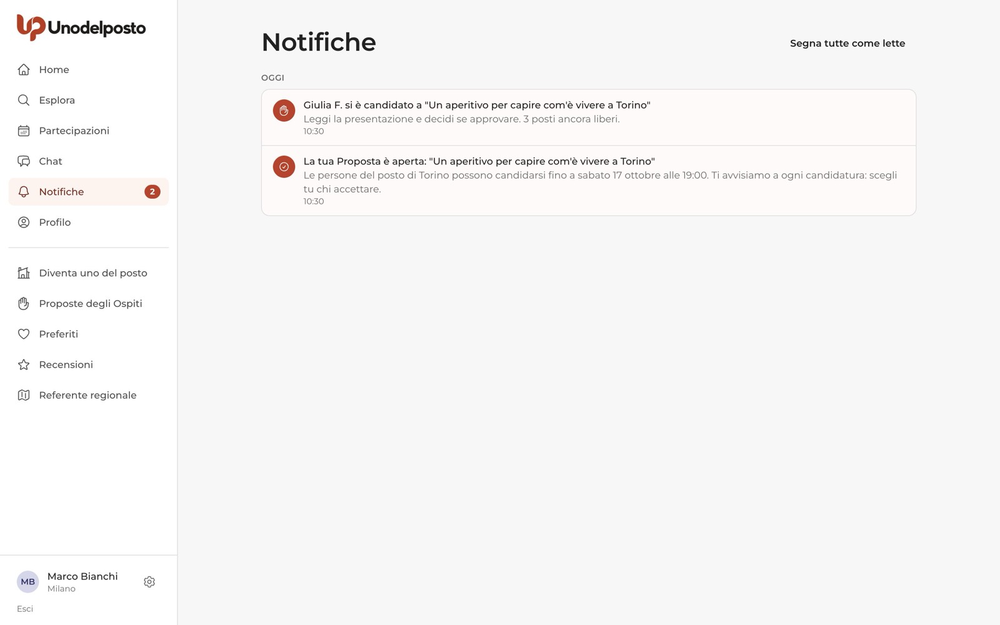
Per le notifiche sul telefono, usa il riquadro «Attiva le notifiche sul telefono» nella Home e premi Attiva, oppure vai in Impostazioni → Notifiche → «Notifiche sul telefono». Il telefono ti chiede il permesso. Su iPhone funzionano solo se hai messo Unodelposto sulla schermata Home (vedi sotto). Per i messaggi in chat c'è un capitolo apposta in «Chat di gruppo».
Installa l'app sulla schermata Home
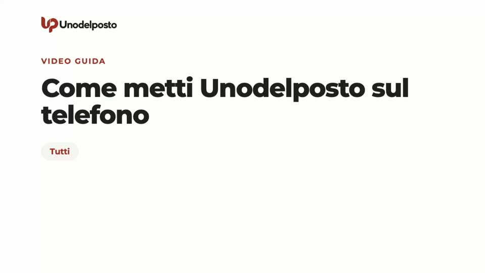
Non è un'app da scaricare dallo store: è il sito, salvato come app. Hai un'icona, niente barra del browser e le notifiche sul telefono. La pagina Installa l'app si apre dal riquadro «Metti Unodelposto sulla schermata Home» nella Home (pulsante Come si fa) o dal link in Impostazioni → Notifiche.
Su iPhone e iPad serve Safari. Se usi Chrome o un altro browser, apri prima la pagina in Safari.
- Condividi. Tocca il pulsante Condividi in basso: il quadrato con la freccia verso l'alto.
- Aggiungi alla schermata Home. Scorri, tocca la voce e poi Aggiungi.
- Apri dall'icona. Apri Unodelposto dalla nuova icona e attiva le notifiche da Impostazioni.
Su Android e computer, se vedi il pulsante Installa adesso, premilo e conferma. Altrimenti apri il menu del browser (i tre puntini in alto a destra) e scegli «Installa app» oppure «Aggiungi a schermata Home». Se la voce non c'è, va bene lo stesso: le notifiche si attivano anche dal sito.
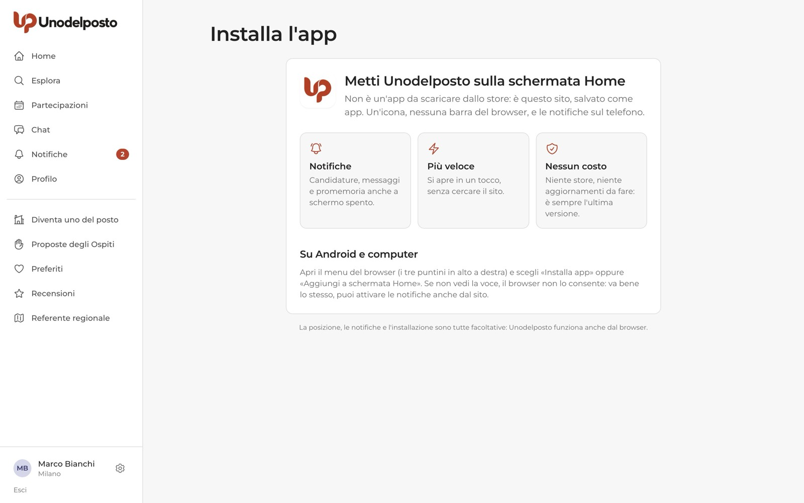
Impostazioni
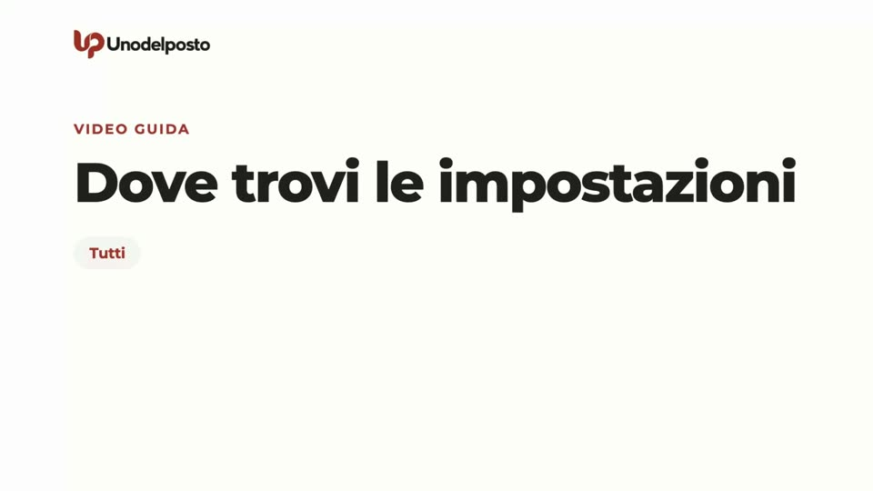
Le impostazioni si aprono con la rotellina: in fondo al menu laterale da computer, in alto da telefono. Sono divise in cinque schede.

| Scheda | Cosa trovi |
|---|---|
| Account | Cambio email con Aggiorna (poi la verifichi di nuovo). Password: Imposta la password o Cambia password; il codice via email resta sempre disponibile. Verifica in due passaggi, consigliata a chi è del posto. Account collegati (Google, con Scollega). Sessioni attive, con Esci dalle altre ed Esci dall'account. |
| Notifiche | Le notifiche sul telefono, con Attiva o Disattiva. Una tabella con ogni tipo di avviso e due colonne: «Email» e «In app e sul telefono». Togli le spunte che non vuoi e premi Salva. Gli avvisi di sicurezza e sull'account arrivano sempre. |
| Privacy | Se sul profilo pubblico si vede il comune esatto o solo la provincia. Chi può vedere le recensioni che hai scritto: tutti o solo gli iscritti. Cosa ricordare quando premi «Vicino a me». Con Dimentica cancelli il comune in cui ti trovavi. |
| Utenti bloccati | Le persone che hai bloccato, con Sblocca. Si blocca qualcuno dal suo profilo o dalla chat. |
| I tuoi dati | L'archivio dei tuoi dati e l'eliminazione dell'account. |
Scaricare i tuoi dati. In «I tuoi dati» premi Prepara l'archivio, poi Scarica l'archivio. È un file con profilo, esperienze, candidature, recensioni e messaggi inviati. Il link vale 24 ore.
Eliminare l'account. Nella stessa scheda, nel riquadro «Elimina account», spunta «Ho capito, voglio eliminare il mio account» e premi Elimina definitivamente. Se hai una password, te la chiediamo per conferma.
E adesso?
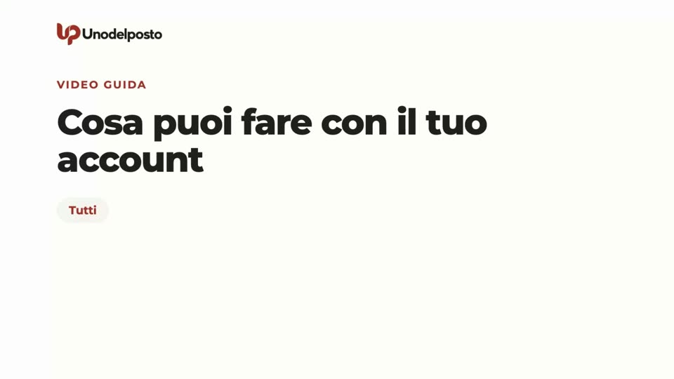
Con l'account pronto hai tre strade, anche tutte insieme:
- Partecipare. Cerca un incontro da Esplora e candidati con due righe di presentazione. Tutto il percorso è in «Trovare un'esperienza e partecipare».
- Diventare uno del posto. Dal menu premi Diventa uno del posto, completa il profilo del posto e prepara la tua proposta. Leggi «Proporre un'esperienza».
- Scrivere una Proposta dell'Ospite. Racconti cosa ti piacerebbe fare in un comune, o quale aiuto offri, e sono le persone del posto a candidarsi. Leggi «Proposte degli Ospiti».
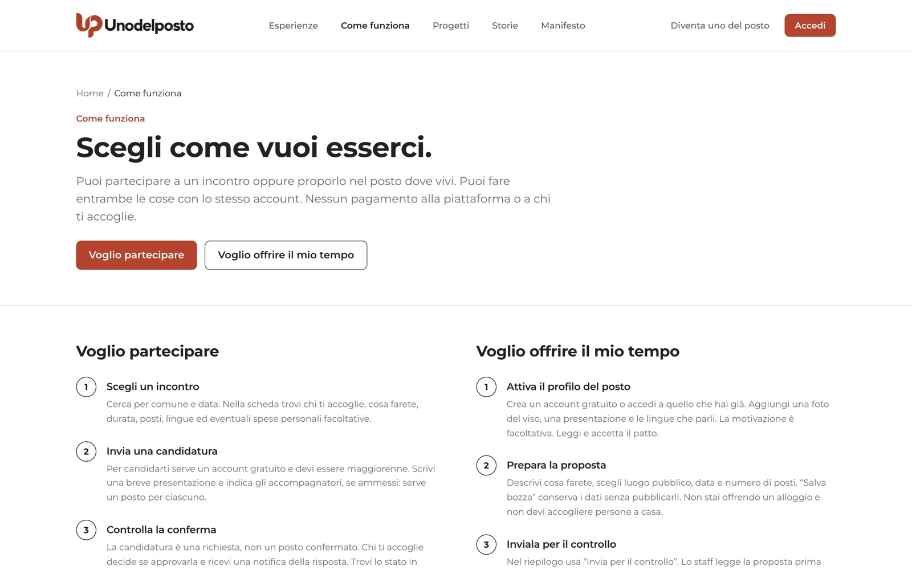
Altre guide utili: «Chat di gruppo», «Recensioni», «Sicurezza e fiducia», «Enti e Progetti», «Rete, verifiche e profili affidati» e «Referenti regionali».
Domande frequenti
Devo pagare qualcosa?
No. L'iscrizione e gli incontri sono gratuiti, e nessuno può chiederti soldi, mance o «contributi spese». Se succede, segnalalo.
Posso iscrivermi se ho meno di 18 anni?
No, l'account è solo per maggiorenni. Il controllo si fa sulla data di nascita.
Il codice di accesso non arriva. Cosa faccio?
Guarda nella posta indesiderata. Se non c'è, aspetta qualche secondo e premi «Mandami un altro codice». Se hai scritto male l'indirizzo, premi «Usa un altro indirizzo».
Posso essere sia Ospite sia persona del posto?
Sì, con lo stesso account. Diventare uno del posto non cambia niente di quello che fai come Ospite.
Chi vede la mia email e la mia data di nascita?
Nessun altro utente. Sul profilo pubblico si vedono nome, iniziale del cognome, comune, foto, presentazione, lingue e recensioni.
Ho sbagliato la data di nascita. Come la correggo?
Dopo l'iscrizione non puoi cambiarla da solo: scrivi al supporto.
Ti serve su carta?
La stessa guida in PDF, da stampare o inviare.